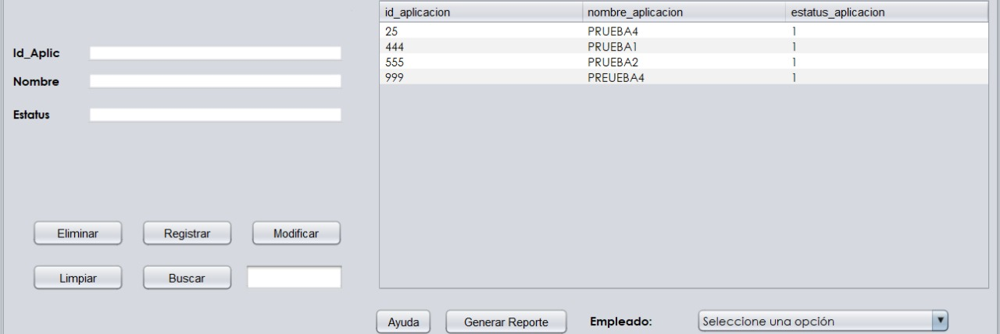
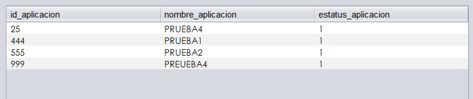
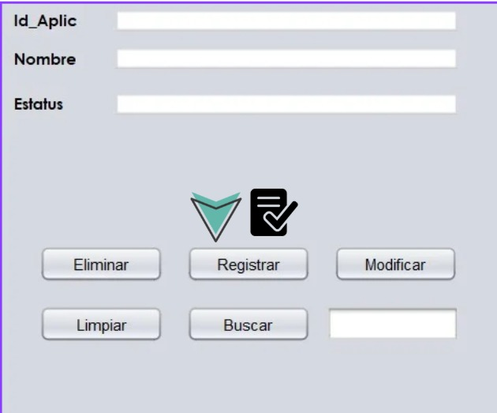
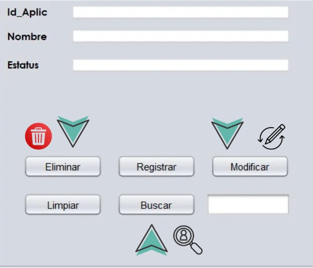
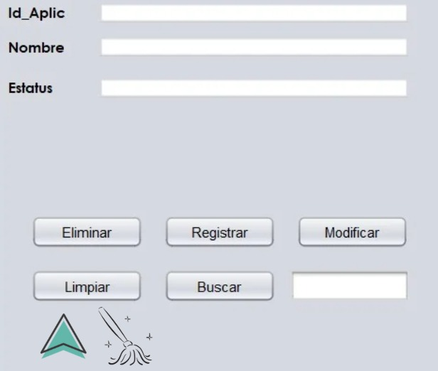
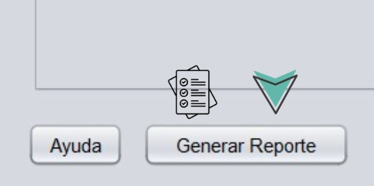

CRUD Aplicaciones
En este apartado del programa nos permite tener completa manipulación de las aplicaciones que tendran disponibles los usuarios dependiendo
de sus necesidades, permitiendo crear, eliminar modificar y buscar las aplicaciones.

Vista de aplicaciones
En este panel nos permite tener una vista general de todas las aplicaciones existentes que tenemos, en donde podemos visualizar su identificación, su nombre y el estatus
en el que se encuentra la aplicación, si es una aplicación vigente o desactivada.

Registrar aplicaciones
En estos Text Field son los apartados en donde podemos registrar toda la información de las aplicaciones nuevas que se desean registrar, el no. de id depende del usuario que lo este registrando
cada aplicación tiene un no de id determinado entre un rango, luego de escribir toda la información de la aplicación debemos precionar el botón de ingresar para que la información
de nuestra nueva aplicación de inserte en nuestra base de datos y se muestre en nuestro panel de aplicaciones.

Modificar, Eliminar, Buscar aplicaciones
Los botones modificar, buscar y eleminar se ejecutan de una manera similar, el usuario debe colocar el id de la aplicación en el text field señalado con la flecha negra
luego de ingresar el id de la aplicación se debe precionar alguno de los botones señalados, depende de la utilización que se desea, ya sea modificar la información de una aplicación existente,
eliminar una aplicación o buscar la aplicación entre todas las aplicaciones existentes.

Limpiar Text Field
Si el usuario ya no desea utilizar ninguna de las opciones se dejo un botón en donde permite limpiar la información que se quedo adentro de los text field, esto no modifica nada sobre las
aplicaciones ya registradas.

Generar Reporte
Este botón nos permite obtener un reporte detallado de las aplicaciones existentes en nuestra base de datos.
